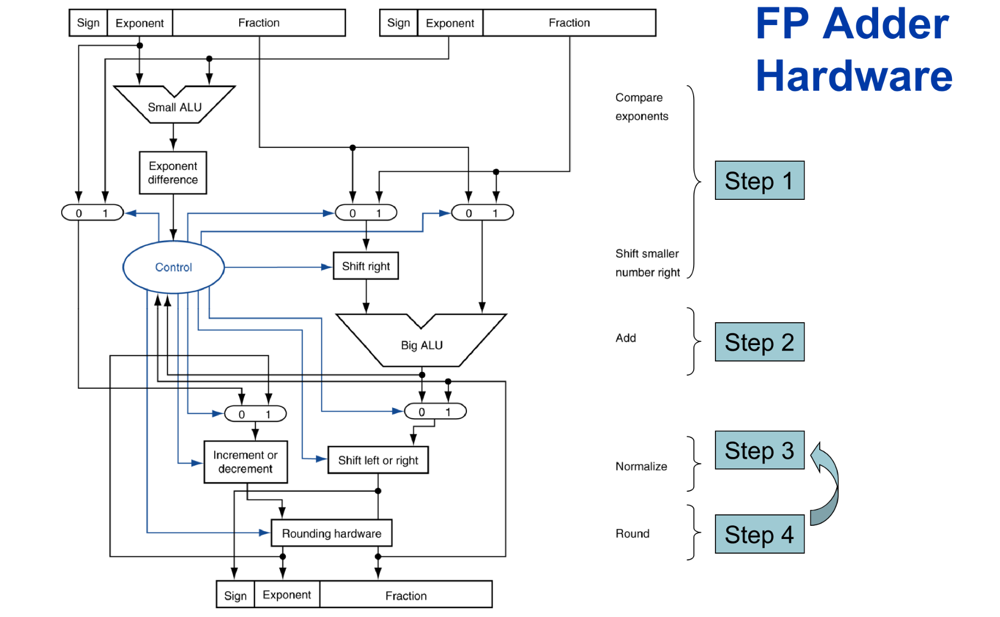
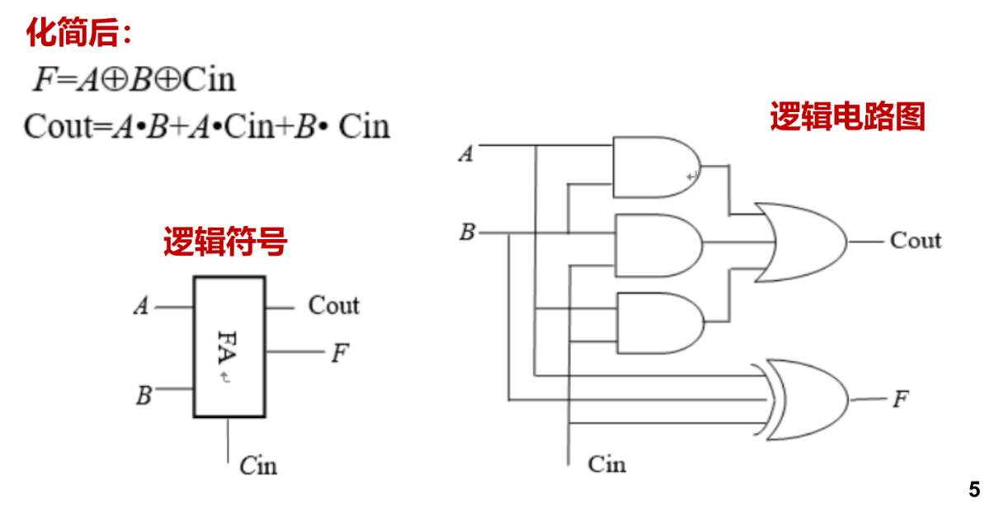
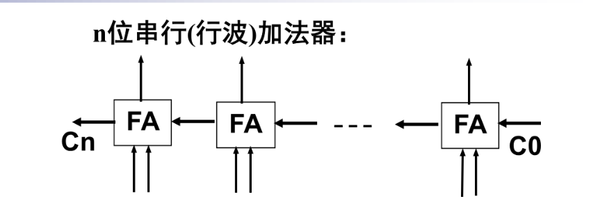
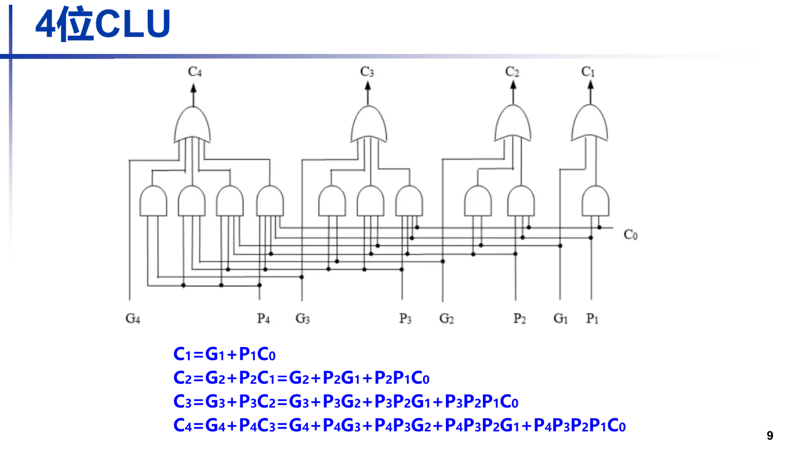
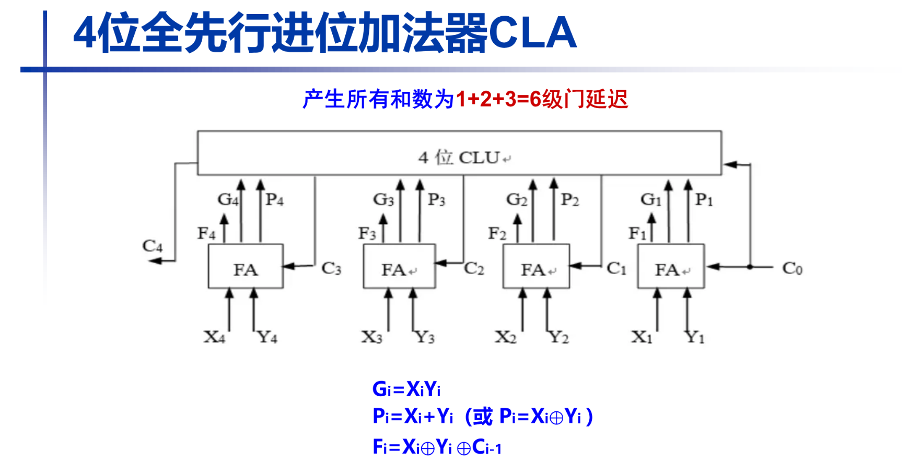
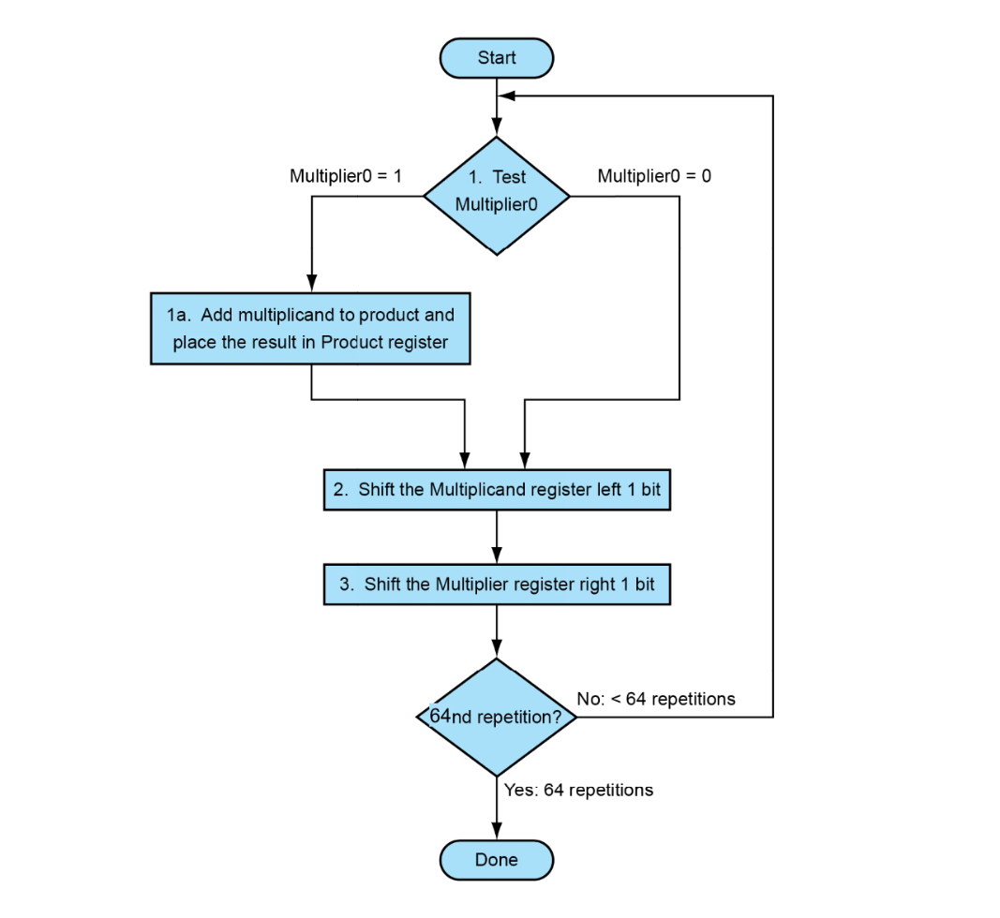
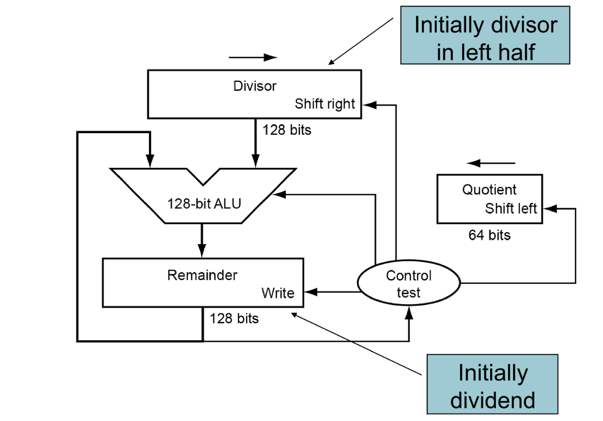

Chapter2 计算机的算数运算
要理解计算机如何进行算术运算，首先要明白计算机是个“一根筋”的机器：它只会做加法，且存储空间有限。为了用加法代替减法，并处理正负号，人类设计了一套精妙的编码系统。
1. 整数的存储编码
原码 (Sign-Magnitude)
- 规则：最高位为符号位（0正1负），其余位表示数值的绝对值。
- 例子（以 8 位为例）：
- \(+1 = [0000 0001]\)
- \(-1 = [1000 0001]\)
- 缺点：0 有两种表示（\(+0\) 和 \(-0\)），且加减法运算逻辑不统一，硬件设计极其复杂。
反码 (Ones' Complement)
- 规则：正数与原码相同；负数符号位不变，数值位逐位取反。
- 例子：
- \(-1\) 的反码 = \([1111 1110]\)
- 意义：它是原码转补码的中间状态，目前极少直接用于存储。
补码 (Two's Complement) —— 计算机的核心
- 规则：正数与原码相同；负数在反码的基础上 +1。
- 例子：
- \(-1\): 原码
10000001\(\to\) 反码11111110\(\to\) 补码11111111 - 为什么要用补码？
- 统一加减法：\(A - B\) 可以看作 \(A + (2^n -B) \mod 2^n\)。使用补码运算，符号位直接参与计算，结果依然正确。
- 消灭了 \(-0\)：\(0\) 只有一种表示
0000 0000。 - 多出一个数：8位补码可以表示 \(-128\) 到 \(127\)（比原码多表示一个 \(-128\)）。
移码 (Excess/Biased)
- 规则：在数值上加上一个固定的“偏置常数”（Bias）。通常用于表示浮点数的阶码。
- 例子：8 位移码偏置 127，则 \(0\) 表示为
0111 1111（即 \(0+127\)）。 - 好处：保持了数轴的线性顺序，全 0 为最小值，全 1 为最大值，方便硬件直接比较大小。
计算补码
“绝对值按位取反 + 1” 确实是计算补码最通用、最不会出错的方法，它背后的本质正是同余（取模）。
在数学上，按位取反（逻辑非）操作其实是用全 \(1\) 的数减去原数。
对于 \(n\) 位二进制数，全 \(1\) 的数就是 \(2^n - 1\)。
当你把绝对值 \(X\) 按位取反时，你实际上是在计算：
当你再 \(+1\) 时：
这正是取模的定义！ 在 \(2^n\) 的模系统中，\(-X\) 的等价正数就是 \(2^n - X\)。
比如在时钟（模 12）上，倒拨 3 小时（\(-3\)）和顺拨 9 小时（\(12 - 3 = 9\)）效果是一样的。
Tip
分享一个比“取反加一”更快的眼神观察法，它不需要你真的去做加法。
规则：从右往左看，找到第一个“1”，保持这个“1”和它右边的“0”不变，把这个“1”左边的所有位全部取反。
- 例子：计算 -8 (8位二进制)
- 8 的原码：
0000 1000 - 从右往左看，第一个
1在第四位。 - 保持右边的
1000不变。 - 把左边的
0000全部取反，变成1111。 - 结果：
1111 1000（这就是 -8 的补码）。
这个方法其实就是“按位取反 + 1”在逻辑上的合并，非常适合手动草稿。
学过数逻的同学可能知道，数逻里面补码电路就可以这么设计
2. IEEE 754 浮点数表示
如果说补码是为了解决整数的正负问题，IEEE 754 就是为了解决“天文数字”和“微观数字”的存储问题。它类似科学计数法。
一个浮点数被拆分为三部分：
结构组成（以 32 位单精度 float 为例）：
- 符号位 (Sign, 1 bit)：0 代表正，1 代表负。
- 阶码 (Exponent, 8 bits)：
- 使用移码存储。偏置值（Bias）为 127。
- 如果你看到的阶码二进制值是 128，实际指数 \(E = 128 - 127 = 1\)。
- 尾数 (Fraction/Mantissa, 23 bits)：
- 采用规格化表示，即隐藏开头的“1.”。例如 \(1.011...\) 只存储 \(011...\)。
- 这样可以多省出 1 位的精度。
将 \(5.0\) 转换为浮点数
- 转二进制：\(5.0 = 101_2\)
- 规格化：\(1.01 \times 2^2\)
- 确定参数：
- 符号 \(S = 0\)
- 指数 \(E = 2\)，存储值 = \(2 + 127 = 129\) (
1000 0001) - 尾数 \(M = 01\)（后面补 0）
- 最终存储：
0 | 10000001 | 01000000000000000000000
特殊数值
IEEE 754 还规定了一些特殊情况，方便程序处理错误：
- 阶码全 0，尾数全 0：表示 \(\pm 0\)。
- 阶码全 1，尾数全 0：表示 \(\pm \infty\) (无穷大)。
- 阶码全 1，尾数非 0：表示 NaN (Not a Number，如 \(0 \div 0\) 的结果)。
非规格数
在 IEEE 754 标准中，非规格化数（Denormalized numbers / Subnormal numbers） 的引入是为了解决一个致命的问题：渐进式下溢（Gradual Underflow）。
如果没有非规格化数，浮点数在靠近 \(0\) 的时候会突然“跳水”，导致巨大的计算误差。

Tip
为什么需要非规格化数？（填补“零点真空”）
在规格化数（Standard Normalized numbers）的规定下：
- 尾数前面必须隐含一个
1.。 - 指数位（阶码）不能全为 \(0\)。
这会导致一个现象：最小的规格化正数是多少？
- 阶码存储值为
1（即实际指数为 \(1-127 = -126\)）。 - 尾数全为 \(0\)（隐含 \(1.0\)）。
- 数值为：\(1.0 \times 2^{-126}\)。
问题来了：在 \(0\) 和 \(1.0 \times 2^{-126}\) 之间，存在一个巨大的“真空地带”。如果两个很小的数相减，结果落在这个区间，硬件只能将其强制转为 \(0\)。这种“突然变成 \(0\)”的情况会引发严重的数学错误。
当阶码（Exponent）全为 0 时，这个数就进入了“非规格化”模式。它的规则发生了两个关键变化：
- 隐含位由
1.变为0.：尾数不再是 \(1.f...\)，而是 \(0.f...\)。 - 指数固定为 \(-126\)（对于单精度）：注意！虽然阶码存储值是 \(0\)，但它的实际指数不是 \(0 - 127 = -127\)，而是强制规定为 \(-126\)。
为什么要强制规定指数为 \(-126\)？
这是为了实现从规格化数到非规格化数的平滑平移。
我们可以对比一下：
- 最小的规格化数：\(1.000... \times 2^{-126}\)
- 最大的非规格化数：\(0.111... \times 2^{-126}\)（尾数全为 \(1\)）
你看，它们的指数都是 \(-126\)！
通过这种设计，非规格化数就像是一把“接力棒”，在数值小于 \(1.0 \times 2^{-126}\) 时，通过减小尾数开头的 \(0.\) 后面的有效位，一点点地靠近 \(0\)。
浮点数的完整分类表
现在我们可以总结出 IEEE 754 的全貌了：
| 阶码 (E) | 尾数 (M) | 表示含义 | 数值计算公式 |
|---|---|---|---|
00...0 |
00...0 |
真 0 | \(\pm 0\) |
00...0 |
非全 0 | 非规格化数 | \((-1)^S \times (0.M) \times 2^{-126}\) |
01..01 到 11..10 |
任意 | 规格化数 | \((-1)^S \times (1.M) \times 2^{E-127}\) |
11...1 |
00...0 |
无穷大 | \(\pm \infty\) |
11...1 |
非全 0 | NaN | 不是一个数字（无效运算） |
Note
代价是什么？
虽然非规格化数在数学上很完美，但在早期计算机硬件中，处理非规格化数的逻辑非常复杂，速度通常比普通浮点运算慢几十甚至上百倍。
因此，在一些对性能要求极高的领域（如 3D 游戏渲染、深度学习），程序员有时会开启一个叫 Flush-to-Zero (FTZ) 的模式，直接把非规格化数当 \(0\) 处理，牺牲一点点精度来换取巨大的速度提升。
总结一下：
- 规格化数：\(1.xxxxx \times 2^{Exp}\)，用于处理常规数值。
- 非规格化数：\(0.xxxxx \times 2^{-126}\)，用于在靠近 \(0\) 的极小区间内提供“缓冲”，避免计算结果突然崩塌。
3. IEEE 754 浮点数运算
浮点数的运算比整数复杂得多，因为整数的权值是固定的，而浮点数就像是带了“缩放比例”的数字。在进行加法或乘法时，硬件必须像拆解零件一样，先处理指数，再处理尾数。
1. 浮点数加法：必须先“对齐”
浮点数加法最麻烦的地方在于：指数不同，尾数不能直接相加。这就像你不能直接把 \(1.2 \times 10^2\) 和 \(3.4 \times 10^3\) 的尾数相加（\(1.2+3.4\)）一样，必须先统一指数。
步骤一：对阶 (Alignment)
- 原则：小阶向大阶看齐。
- 原因：右移尾数会导致低位丢失（精度下降），而左移尾数会导致高位溢出，所以只能选择右移。
- 操作：计算指数差 \(\Delta E = E_1 - E_2\)。将指数较小的数的尾数向右移 \(\Delta E\) 位，指数加 \(\Delta E\)。
步骤二：尾数求和 (Addition)
- 将对齐后的两个尾数（记得算上隐含的“1”）按整数补码方式相加。
步骤三：规格化 (Normalization)
- 如果结果不是 \(1.x...\) 的形式，需要调整。
- 右规：如果求和导致进位（如变成 \(10.x...\)），尾数右移，指数加 1。
- 左规：如果相减导致高位变 0（如变成 \(0.001...\)），尾数左移，指数相应减小。
步骤四：舍入 (Rounding)
- 移位过程中掉出去的位，需要根据 IEEE 754 规定的模式（如“向最接近的值舍入”）进行补偿。
步骤五：溢出检测
- 检查最终指数是否超出了 8 位阶码能表示的范围（上溢到 \(\infty\) 或下溢到 \(0\)）。

2. 浮点数乘法：简单但“宽”
相比加法，乘法反而不需要对阶，因为它遵循指数相加、尾数相乘的逻辑。
步骤一：计算符号位
- 使用异或运算：\(S_{res} = S_1 \oplus S_2\)（同号得正，异号得负）。
步骤二：指数相加
- 注意：由于指数是移码存储（带 Bias），直接相加会重复计算偏移量。
- 公式：\(E_{res} = (E_1 - 127) + (E_2 - 127) + 127 = E_1 + E_2 - 127\)。
步骤三：尾数相乘
- 两个 24 位（含隐含位）的尾数相乘，得到一个 48 位的积。
- 这是硬件中最耗资源的部分，通常需要大量的乘法阵列。
步骤四：规格化、舍入与溢出检测
- 规格化：由于 \(1.x \times 1.y\) 的结果范围在 \([1.0, 4.0)\) 之间，结果最多只需要右规一次（如果积 \(\ge 2.0\)）。
- 舍入：将 48 位的中间结果截断回 23 位。
3. 为什么乘法有时比加法“快”？
在现代 CPU 中，你可能会发现浮点乘法的延迟并不比加法高多少，甚至在某些架构下吞吐量更高。原因有二：
- 无需对阶：乘法省去了“比较指数-循环移位”的繁琐预处理。
- FMA 指令 (Fused Multiply-Accumulate)：现代处理器通常支持 \(A \times B + C\) 一次性完成，只进行一次舍入。这不仅提高了速度，还减少了精度损失。
4. 舍入模式控制
在 IEEE 754 标准中，舍入（Rounding）是连接“无限精度的数学运算”与“有限位数的计算机存储”之间的桥梁。当浮点运算产生的结果位数（如乘法产生的 48 位尾数）超过了寄存器能定义的位数（如 23 位）时，就必须进行舍入。
IEEE 754 定义了五种主要的舍入模式，分为常用模式和定向模式两类。
常用模式（最近舍入）
这是大多数编程语言（如 C, Python, Java）默认采用的模式。
① 就近舍入，向偶数舍入 (Round to Nearest, Ties to Even)
这是 IEEE 754 的默认模式，也常被称为“银行家舍入”。
- 规则：舍入到最接近的数值。
- 关键点（Ties）：如果结果正好处于两个数值的正中间（例如想保留整数，结果是 1.5 或 2.5）：
- 向偶数方向舍入。
1.5\(\rightarrow\)22.5\(\rightarrow\)2- 为什么要这么做？ 如果一律“四舍五入”（0.5 总是向上），在处理海量数据加法时，结果会产生明显的正向偏差（统计漂移）。向偶数舍入使 0.5 有一半概率向上，一半概率向下，从而抵消误差。
② 就近舍入，向远离 0 舍入 (Round to Nearest, Ties to Away from Zero)
- 规则：舍入到最接近的数值。
- 关键点：如果正好在中间，选择绝对值更大的那个（即传统的“四舍五入”）。
1.5\(\rightarrow\)2-1.5\(\rightarrow\)-2
定向模式 (Directed Rounding)
这些模式通常用于区间算术（Interval Arithmetic），通过确定结果的上界和下界来控制计算误差。
③ 向零舍入 (Round toward Zero / Truncate)
- 规则：直接截断多余的位数，不看大小。
- 效果：正数向下变小，负数向上变大（绝对值都在变小）。
1.9\(\rightarrow\)1-1.9\(\rightarrow\)-1
④ 向正无穷舍入 (Round toward \(+\infty\) / Ceiling)
- 规则：结果向数轴右侧靠拢。
- 效果：
1.1\(\rightarrow\)2-1.9\(\rightarrow\)-1
⑤ 向负无穷舍入 (Round toward \(-\infty\) / Floor)
- 规则：结果向数轴左侧靠拢。
- 效果：
1.9\(\rightarrow\)1-1.1\(\rightarrow\)-2
舍入过程中的三个关键位
为了实现精准的舍入，硬件在运算时会额外保留 3 位信息，被称为 GRS 位：
- G (Guard bit)：保护位，紧跟在有效数位之后。
- R (Round bit)：舍入位，在 G 之后。
- S (Sticky bit)：粘滞位。只要 R 之后有任何一位是 1，S 就被置为 1。
这三位的作用：
它们帮助硬件判断中间结果是“刚好 0.5”、“小于 0.5”还是“大于 0.5”。
- 如果 \(GRS = 100\)：说明恰好在中间（Ties）。
- 如果 \(GRS > 100\)：说明大于中间值，应进位。
- 如果 \(GRS < 100\)：说明小于中间值，应舍弃。
4. ALU 原理 加法器部分
要理解 ALU（算术逻辑单元）的工作原理，加法器是绝对的核心。计算机中的所有算术（减、乘、除）最终都会转化为加法运算。
我们从最基本的“零件”开始，逐步构建到高性能的架构。
全加器 (Full Adder, FA)
全加器是构建加法器的最小逻辑单位。
与半加器（只加两个位）不同，全加器能处理“低位传过来的进位”。
- 输入：\(A\)（操作数1）、\(B\)（操作数2）、\(C_{in}\)（低位进位）。
- 输出：\(S\)（和 Sum）、\(C_{out}\)（向高位进位）。
- 逻辑关系：
- \(S = A \oplus B \oplus C_{in}\)
- \(C_{out} = (A \cdot B) + (C_{in} \cdot (A \oplus B)) = A \cdot B + A \cdot C_{in} + C_{in} \cdot B\)

串行进位加法器 (Ripple Carry Adder, RCA)
如果你想做一个 4 位或 32 位的加法，最简单的方法就是把全加器“排成一排”。
- 原理：将前一个全加器的 \(C_{out}\) 连接到下一个全加器的 \(C_{in}\)。
- 缺点：延迟 (Latency)。
- 就像多米诺骨牌，第 32 位的计算必须等待第 31 位产生进位，第 31 位又要等第 30 位……
- 关键瓶颈：进位链（Carry Chain）太长，电路速度非常慢。

CLU (Carry Look-ahead Unit)
CLU（进位产生单元） 是先行进位加法器中的核心硬件模块。
-
CLU 的作用：它专门接收每一位的 \(G_i\) 和 \(P_i\)，然后瞬间输出所有的进位 \(C_i\) 给加法器。
-
多级 CLA：
在 64 位 CPU 中，如果直接展开 \(C_{64}\) 的逻辑式，电路会复杂到无法实现。因此，工程师通常采用分层设计：
- 每 4 位组成一个小 CLA。
- 然后再用一个“组间 CLU”去预测这 4 位组与组之间的进位。

先行进位加法器 (Carry Look-ahead Adder, CLA)
为了解决 RCA 的延迟问题，科学家提出了“先行进位”的思想：能不能不等低位算出来，直接通过逻辑电路预测出进位？
它引入了两个关键概念：
- 生成信号 (Generate, \(G\))：\(G = A \cdot B\)。如果 \(A, B\) 都是 1，那么无论低位进位是什么，本位一定会产生进位。
- 传递信号 (Propagate, \(P\))：\(P = A \oplus B\)。如果 \(A, B\) 中有一个是 1，那么低位的进位会通过本位传递到更高位。
通过这两个信号，我们不需要等待实际的加法完成，就可以列出进位的布尔表达式：
- \(C_1 = G_0 + P_0 \cdot C_0\)
- \(C_2 = G_1 + P_1 \cdot G_0 + P_1 \cdot P_0 \cdot C_0\)
- ...（以此类推，\(C_{31}\) 也可以直接用 \(A, B\) 的初值算出）

为什么是六级门延迟？
第一阶段：产生 \(P_i\) 和 \(G_i\)（1级延迟）
- 逻辑：从输入 \(X_i, Y_i\) 到产生 \(P_i\) 和 \(G_i\)。
- 门电路：
- \(G_i = X_i \cdot Y_i\)（与门）
- \(P_i = X_i \oplus Y_i\)（异或门）
- 耗时：这两个信号是并行的，所以计为 1 级门延迟。
第二阶段：CLU 产生进位 \(C_i\)（2级延迟）
这是 CLU 内部最精妙的地方。虽然公式很长（如 \(C_4 = G_3 + P_3G_2 + \dots\)），但如果用与或式（AND-OR）实现，它只需要两层：
- 与门层：计算像 \(P_3G_2\) 这种组合项（第 2 级）。
-
或门层：将所有项加（OR）在一起，输出 \(C_i\)（第 3 级）。
-
耗时：无论 \(C_1\) 还是 \(C_4\)，在 CLU 内部都是经过这两级门后同时产生的。
第三阶段：产生最终的和 \(F_i\)（3级延迟）
- 逻辑：\(F_i = X_i \oplus Y_i \oplus C_{i-1}\)。
- 注意点：图中公式写的是 \(X_i \oplus Y_i \oplus C_{i-1}\)。实际上，\(X_i \oplus Y_i\) 就是第一阶段算出来的 \(P_i\)。
- 门电路：
- \(F_i = P_i \oplus C_{i-1}\)。
- 在标准的逻辑实现中，一个异或门（XOR）通常被视为 3 级门延迟（因为它由多个与/非/或门组成）。
- 注：有些教材将异或门简记为 1 级，但严谨的考研或硬件教材通常将其拆解。按照“6级”的说法，这里计算 \(F_i\) 的异或操作被计为了 3 级门延迟。
处理Overflow
核心判断逻辑：异或法
在硬件电路中，判断溢出最经典、最高效的方法是观察最高位的进位情况。
我们需要关注两个进位信号：
- \(C_n\)：最高位产生的进位（即传给外部的 Carry-out）。
- \(C_{n-1}\)：次高位传给最高位的进位。
溢出判断公式：
- 没有溢出：如果 \(C_n\) 和 \(C_{n-1}\) 相同（同为 0 或同为 1），则没有溢出。
- 发生溢出：如果 \(C_n\) 和 \(C_{n-1}\) 不同，说明发生了溢出。
为什么这个逻辑是正确的？
我们可以通过正负号的变化来直观理解：
- 正 + 正 = 负（溢出）：
两个正数相加，最高位（符号位）原本都是 0。如果次高位有进位（\(C_{n-1}=1\)）进来，符号位变成了 1（结果变负），此时最高位本身不会产生进位（\(C_n=0\)）。\(0 \oplus 1 = 1\)，判定溢出。
- 负 + 负 = 正（溢出）：
两个负数相加，符号位原本都是 1。如果次高位没有进位（\(C_{n-1}=0\)）进来，符号位相加 \(1+1=0\)（结果变正），此时最高位产生了一个进位（\(C_n=1\)）。\(1 \oplus 0 = 1\)，判定溢出。
- 一正一负相加：
绝对不可能发生溢出，因为结果的绝对值一定比原先的数小。此时硬件产生的 \(C_n\) 和 \(C_{n-1}\) 总是相等的。
5. ALU原理 乘法器部分
基础乘法器
在硬件图中，有三个关键的存储单元：
- Multiplier (乘数寄存器)：初始存放乘数（例如 64 位）。每一轮循环，我们会观察它的最低位（Multiplier0）。
- Multiplicand (被乘数寄存器)：初始存放被乘数。为了防止移位时溢出，这个寄存器的宽度通常是双倍的（例如 128 位）。
- Product (乘积寄存器)：初始值为 0。它就像一块黑板，用来累加每一轮产生的中间结果。

工作流程
每一轮乘法运算包含三个核心步骤：
第一步：测试与加法 (Test & Add)
- 动作：检查乘数的最低位
Multiplier0。 - 逻辑：
- 如果
Multiplier0 == 1：说明这一位对应一个“有效”的被乘数，硬件将Multiplicand与当前Product的值相加，并写回Product。 - 如果
Multiplier0 == 0：说明这一位对应的是 0，不进行加法操作（直接跳过）。
第二步：被乘数左移 (Shift Multiplicand Left)
- 动作：将
Multiplicand寄存器向左移动 1 位。 - 目的：这模拟了我们在纸上算乘法时，第二行要比第一行向左缩进一位的操作。每左移一次，相当于将该数乘以 2。
第三步：乘数右移 (Shift Multiplier Right)
- 动作：将
Multiplier寄存器向右移动 1 位。 - 目的：为了在下一轮循环中，让原来的“次低位”变成新的“最低位”，以便再次进行
Multiplier0的测试。

循环停止条件
- 重复次数：对于 64 位的乘法，这个循环需要精确执行 64 次。
- 结果：当 64 轮结束，
Multiplier中的所有位都被测试完毕，Product寄存器中存放的就是最终的 128 位乘积。
优化版乘法器
核心改进：寄存器的合并与共用
在优化后的架构中，最巧妙的设计是将 乘积寄存器（P） 和 乘数寄存器（Y） 拼接成了一个统一的 128 位移位寄存器。
- 初始状态：
- 高 64 位（P）：初始化为 0，用于存放部分积（Partial Product）。
- 低 64 位（Y）：存入初始的乘数。
- 这种设计的逻辑： 随着乘法循环的进行，乘数由于不断“右移”而失效的位，正好腾出了空间来存放乘积不断增长的低位。

工作原理与流程
第一步：检查最低位
控制逻辑测试 乘数寄存器 Y 的最低位。
第二步：条件加法（并行操作）
- 如果最低位为 1，则将被乘数寄存器 X 的内容与 乘积寄存器 P（高 64 位） 相加。
- 相加产生的进位信号保存在进位触发器 C 中。
第三步：同步右移（核心提速步）
每一轮循环不再分多次移位，而是实现 C、P、Y 三者的同步右移：
- C 移入 P 的最高位：保证加法进位不丢失。
- P 的最低位移入 Y 的最高位：部分积向下传递。
- Y 的最低位移出：丢弃已经处理过的乘数位。

6. ALU 原理 除法器部分
恢复余数除法（Restoring Division）
这个除法器的工作原理模拟了我们手动进行长除法（Long Division）的过程。它通过一系列的“减法”和“移位”操作，来确定商（Quotient）的每一位以及最终的余数（Remainder）。
核心寄存器的初始状态
在除法开始前，硬件会自动进行以下初始化：
- Divisor (除数寄存器)：初始时，64位的除数放在这个128位寄存器的左半部分。
- Remainder (余数寄存器)：初始值直接存入被除数。
- Quotient (商寄存器)：全部清零。

详细工作流程（循环体）
除法运算是一个不断“试减”的过程，每一轮循环包含以下三个关键步骤：
第一步：试减 (Subtract)
- 从
Remainder（当前余数/被除数）中减去Divisor（除数），并将结果写回Remainder。 - 目的：测试当前的余数是否“够减”一个除数。
第二步：测试与商位确定 (Test Remainder)
硬件会检查减法后的 Remainder 符号：
- 如果 Remainder \(\ge\) 0（够减）：
- 上商 1：将
Quotient寄存器左移 1 位，最低位补 1。 - 如果 Remainder \(<\) 0（不够减）：
- 上商 0：将
Quotient寄存器左移 1 位，最低位补 0。 - 恢复余数 (Restore)：将被减掉的
Divisor加回到Remainder中，使其恢复到减法之前的状态。
第三步：除数右移 (Shift Divisor Right)
- 将
Divisor寄存器向右移动 1 位。 - 目的：这相当于在长除法中，把除数往后挪一位，准备在下一轮对比被除数的更低位。
循环与结束
- 重复次数：对于64位除法，这个过程通常需要执行 65次 循环（多出的一次是为了处理对齐和最终余数的修正）。
- 最终结果：
Quotient寄存器中存放的就是计算出的商。Remainder寄存器中存放的就是计算出的余数。

Note
- 为什么叫“恢复余数”？ 因为这种算法比较“鲁棒”，它先假设能减去，如果减完发现不够（结果变负），就必须通过加法把余数还原。
- 有符号除法：上述逻辑是针对无符号数的。如果是有符号除法，通常的做法是先取操作数的绝对值进行运算，最后根据“同号得正，异号得负”的原则调整商的符号，并使余数的符号与被除数一致。
- 0除检查：在硬件开始工作前，必须先检查除数是否为0，如果是0，硬件会直接报错（Divide by zero error）。
优化版除法器

这个优化后的除法器（Optimized Divider）与优化乘法器的思路非常相似，其核心目标是减少寄存器的浪费并缩小 ALU 的位宽。通过将“余数”和“商”合并存储，硬件资源得到了极大的简化。
以下是该优化除法器的具体工作机制：
寄存器结构的优化
在基础版除法器中，我们需要 128 位的余数寄存器和 128 位的除数寄存器。优化版将其改造为：
- 除数寄存器 Y：仅需 64 位，存放固定不变的除数。
- 余数/商合并寄存器 (R+Q)：这是一个 128 位 的移位寄存器。
- 高 64 位 (R)：初始存放被除数的高位，运算结束时存放最终的余数。
- 低 64 位 (Q)：初始存放被除数的低位，随着运算进行，商位从右侧逐位移入，结束时存放 64 位商。
工作原理：左移与试减
优化后的除法器采用的是左移逻辑（与优化乘法器的右移相反），每一步都在模拟手工长除法“向后借位”的过程：
- 同步左移：寄存器 R 和 Q 同时向左移动一位。这时，Q 的最高位移入 R 的最低位，而 Q 的最低位空出了一个位置。
- 试减运算：ALU 将 R (高 64 位) 减去 Y (除数)。
- 上商决策：控制逻辑根据减法的结果决定商的值：
- 如果结果 \(\ge 0\) (减成功)：说明够减，将结果写回 R，并在 Q 的空出的最低位上商 1。
- 如果结果 \(< 0\) (减失败)：说明不够减，不写回结果（或执行“加法”以恢复余数），并在 Q 的最低位上商 0。
为什么它更高效？
- ALU 减小：从 128 位精简到了 64 位，因为每一步只需要对当前“部分余数”进行计算。
- 资源合并：被除数、余数和商共用一个 128 位空间。随着被除数被逐渐处理（移出），腾出的空间刚好用来存放新生成的商位。
有符号除法
有符号除法比无符号除法复杂，因为硬件不仅要计算数值，还要严格遵循数学上关于符号的规定。
在计算机组成原理中，有符号除法通常遵循以下核心原则和处理流程：
1. 符号的基本准则
根据数学定义和 IEEE 754 等标准，有符号除法的运算结果需满足：
- 商的符号：遵循“同号得正，异号得负”的原则。
- 即：\(Sign(商) = Sign(被除数) \oplus Sign(除数)\)。
- 余数的符号：在大多数现代计算机架构（包括 RISC-V 和 x86）中，余数的符号必须与被除数保持一致。
- 例如：\(-7 \div 2 = -3 \dots -1\)（余数 \(-1\) 与被除数 \(-7\) 同号）。
- 例如：\(7 \div -2 = -3 \dots 1\)（余数 \(1\) 与被除数 \(7\) 同号）。
2. 有符号除法的处理步骤
由于直接对补码进行除法逻辑（试减、移位）非常复杂，硬件通常采用“取绝对值运算”的策略：
- 预处理（取绝对值）：
- 检查被除数和除数的符号位。
- 如果是负数，通过求补操作（取反加1）将其转换为正数（绝对值）。
- 记录原始符号，用于后续判断。
- 核心运算（无符号除法）：
- 使用你之前看到的优化除法器逻辑（左移、减法、试商）对绝对值进行运算。
- 得到无符号的商和余数。
- 后处理（符号还原）：
- 商的还原：如果被除数与除数异号，将商的结果取反加 1（转回负数补码）。
- 余数的还原：如果原始被除数是负数，则将余数的结果取反加 1。